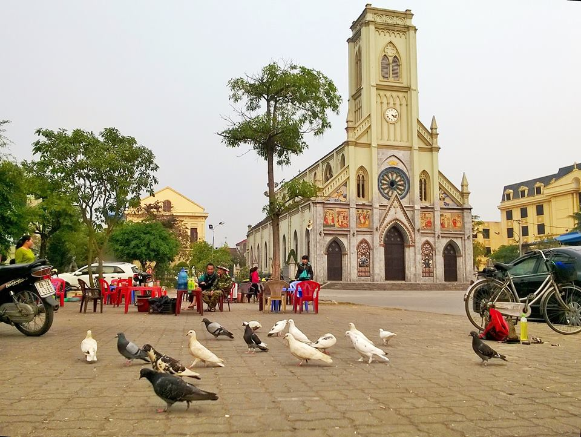
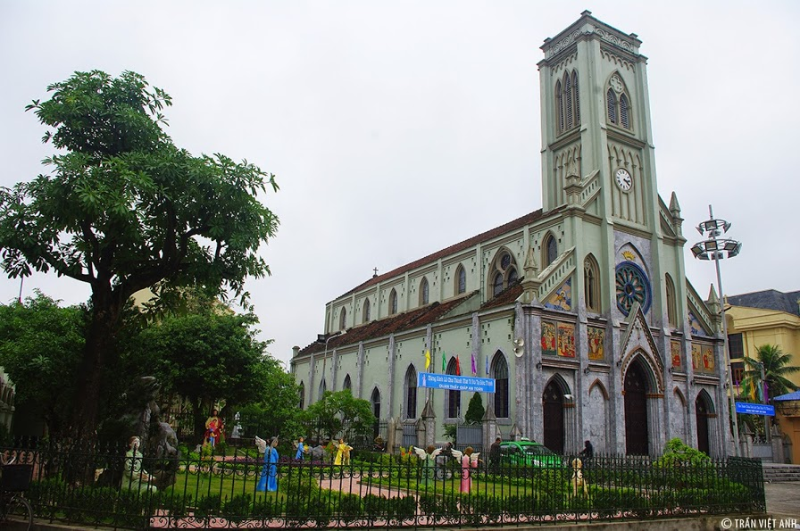
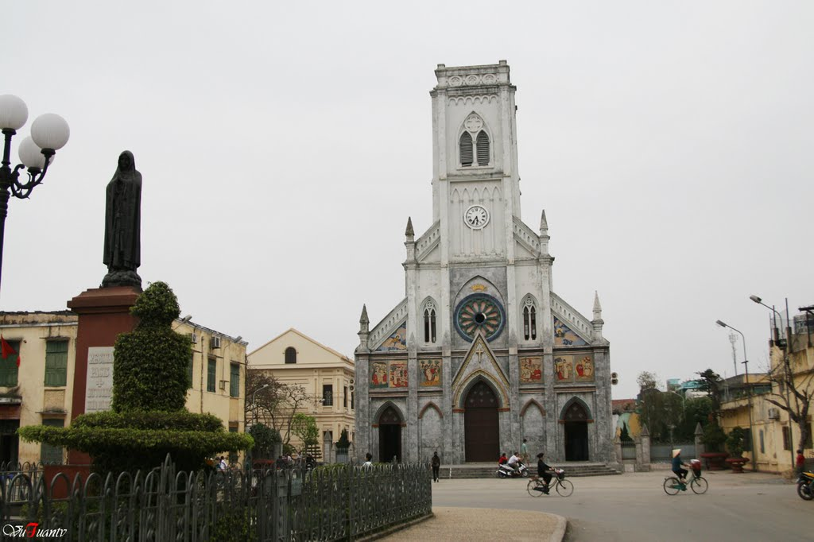

Nhà thờ Đức Mẹ Vô Nhiễm Nguyên Tội được người dân Nam Định quen gọi là
Nhà thờ Lớn được xây dựng cách đây 120 năm (năm 1895), Nhà thờ Lớn Nam Định mang đậm dấu ấn kiến trúc Pháp với sự đơn giản, khoẻ khoắn nhưng không kém phần tinh tế. Toạ lạc trên bến Đò Quan, mặt chính của nhà thờ quay ra phố
Trần Hưng Đạo – con phố trung tâm của Thành Nam. Phía trước nhà thờ là một quảng trường rộng, có bồn hoa, tượng đài Đức Mẹ Maria bằng kim loại, sân hành lễ và đường kiệu. Nhà thờ tuy không quá lớn nhưng luôn mang dáng vẻ uy nghi vững
chãi, và từ lâu đã được coi như trung tâm của đạo Thiên Chúa tại TP Nam Định, là nơi luôn tổ chức các ngày lễ lớn. Đến với Nam Định, bạn không thể không ghé thăm ngôi Thánh Đường cổ kính này.


